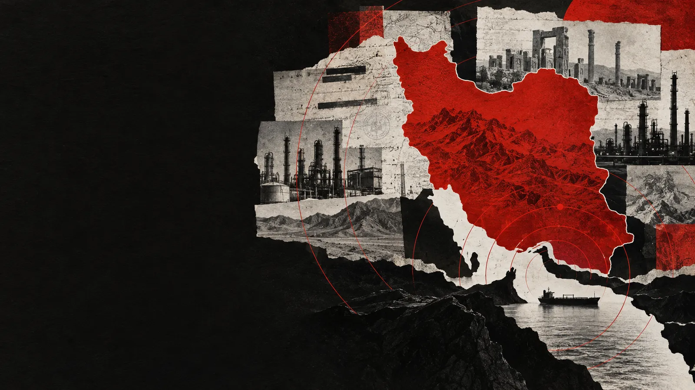
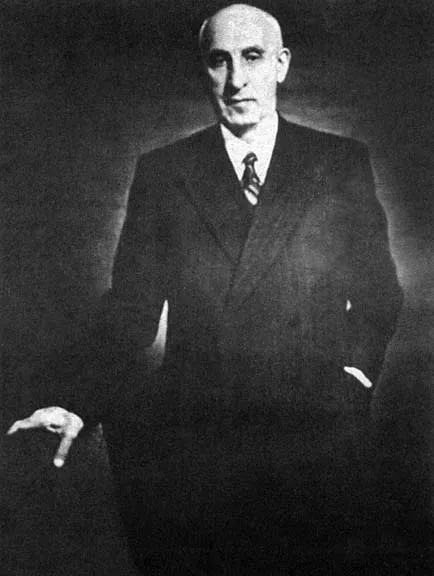
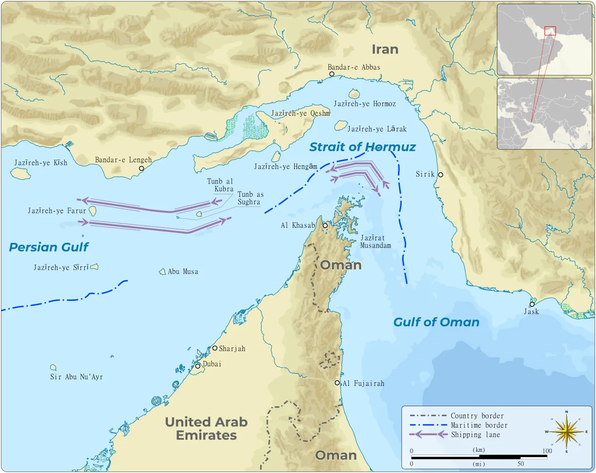

Iran at War · Topic 8
Back to the Headline
On the first day you watched the war without its history. Today you read one headline from this week with eight turning points behind you.
The unit question
Was the 2026 Iran War mainly the result of recent decisions, or decades of unresolved conflict?
You are graded on your reasons, not on which side you pick. “Both” is allowed if you say which one does more of the work.
A date becomes a cause only when you can explain the mechanism.
Step 1 · This week's headline
Start where the unit started: the war now.
Trump rejects plan to reopen Strait of Hormuz
- At the United Nations, Iran offered a “concrete seven-day plan” to reopen the Strait of Hormuz and restart negotiations with the United States, if the U.S. met its conditions.
- President Trump rejected it. “They want to make a deal where they open the strait immediately because they’re losing so badly,” he said.
- The plan is similar to an agreement from June. It collapsed over vague wording, including who would control the strait, and the strikes started again.
- Iran’s president told CBS the U.S. must show “that it does not intend to overthrow our government.”
Read it again
Almost every topic in this unit is inside this one story.
Reopen Hormuz
Iran is offering open water in exchange for relief from the blockade and sanctions.
Sanctions and inspectors
Pressure relief for a nuclear promise and inspections is the JCPOA bargain again.
“Does not intend to overthrow our government”
Iran’s president is talking about 1953.
The June deal collapsed
A deal was made, then fell apart. Again. Each side expects the other to break its word.
Including Lebanon
Iran’s plan also asked for an end to fighting across the region, where its armed partner Hezbollah operates.
The strikes started again
After 2024 and 2025, direct strikes are a normal option. That changes what leaders bargain over.
Step 2 · The card sort
Long-running conflict, or recent decision?
Long-running conflict
A fear or grudge that kept going for decades.
Recent decision
A choice leaders made in the last few years that could have gone another way.
Sort
Put each of the eight cards in one of the two piles, where it does most of its work.
Choose
Pick the three cards that do the most to explain this week’s headline.
Rank
Put your three in order. Older is not automatically more important. Neither is newer.
The eight cards
Every one of these helped make this war possible.
Coup removes Mosaddegh
The U.S. and Britain help overthrow Iran’s prime minister.
Revolution and hostage crisis
Allies become enemies. Each side remembers the other as the aggressor.
Iran-Iraq War
Iran builds missiles, the IRGC and armed partners so it is never that exposed again.
The nuclear deal
Limits and inspections for sanctions relief. A deal turns out to be possible.
U.S. leaves the deal
Sanctions return. Iran later exceeds the nuclear limits, and trust drops further.
First direct attacks
Iran and Israel strike each other’s territory. The shadow war becomes open.
A bigger war
A sustained Israel-Iran war, and U.S. strikes on Iranian nuclear sites.
The current war begins
A joint U.S.-Israeli offensive. Iran retaliates and Hormuz traffic collapses.
Refresher · 1953
Foreign intervention changed Iranian political memory.
Iran nationalized its oil industry. U.S. and British covert support helped remove Prime Minister Mohammad Mosaddegh and strengthened the Shah.
For many Iranians, 1953 became evidence that foreign powers would interfere when Iran challenged their interests.
1953 helps explain distrust. It does not make later war inevitable.

Refresher · 1979
The alliance collapsed and distrust became mutual.
The revolution removed the Shah and created the Islamic Republic. Soon afterward, Iranian students seized the U.S. embassy and held American hostages.
1953 represented foreign interference and support for an unpopular ruler.
The hostage crisis represented an attack on Americans and the collapse of a former alliance.
Later negotiations carried both memories into the room.
Refresher · 1980–88 and 2015–18
A security strategy, then a guardrail that failed.
Invasion and new tools
Iran survived a long invasion feeling surrounded. The IRGC grew. Missiles and armed regional partners became more important.
The JCPOA
Iran accepted nuclear limits and inspections. Other governments provided nuclear-related sanctions relief. Compromise was possible.
U.S. withdrawal
The United States left the agreement and restored sanctions. Iran later moved beyond several nuclear limits.
The 2015 deal shows that later escalation was not automatic.
Refresher · 2024–26
Direct attacks crossed lines leaders had avoided.
Direct exchanges
Iran and Israel attack one another directly more than once.
A larger war
Direct military action grows. U.S. strikes hit Iranian nuclear sites.
The current war
A joint U.S.-Israeli offensive begins February 28. Iran retaliates.
Threshold: the line between actions leaders think are possible and actions they think are too dangerous.
Refresher · Hormuz
Geography gives Iran leverage without naval equality.
Estimated oil flows through the strait
Q4 2025
Q2 2026
The numbers show disruption. They do not prove why leaders acted.

Filing 1 · My top three
Name your top three turning points, in order.
The one that explains the most
Give one reason for this one.
Second
The year is enough.
Third
The year is enough.
Only your #1 needs a reason.
Step 3 · Decide
One war, two beginnings.
February 28, 2026
That is when this war began as a military event. It answers “when did the shooting start?”
An earlier turning point
That answers a different question: when did something change that made this war more likely?
A date becomes a cause only when you can explain the mechanism.
The strongest case against you
Borrow one for your “some people would say” sentence.
Without the collapse of trust after 1953 and 1979, later nuclear and military crises might have been easier to manage.
The 2015 deal showed war was not inevitable, so the 2018 breakdown may matter more than older grievances.
Whatever the older history, choices in 2024 to 2026 crossed lines that earlier leaders had managed to avoid.
If your answer only survives because the other side sounds silly, it has not been tested.
Filing 2 · Final argument
Recent decisions, or decades of unresolved conflict?
Push further: argue that both matter, then say which does more of the work and why.
Step 4 · Filing 3 · Read it again
Back to the headline, one last time.
Pick one detail in this week’s headline. Which turning point explains it, and what would you have missed about it before this unit?
Before you leave
Gather This Topic, then submit in Canvas.
Gather
On the Topic 8 page, click Gather This Topic and confirm 3 of 3.
Copy
Click Copy to Clipboard.
Paste
Paste the complete record into the Topic 8 Canvas Text Entry assignment.
Your filings live only in this browser until you paste them into Canvas.